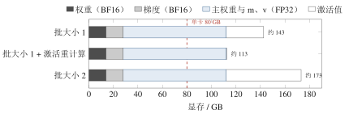
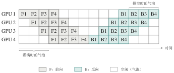
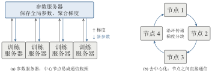

3.5 算力、显存与分布式训练
动手训练之前要先算两笔账：要算多久，要多少显存？本节先推导训练计算量 \(C\approx6ND\)，用它和模型算力利用率估算训练时间；再逐项估算训练显存——权重、梯度、优化器状态和激活值。两笔账都会得出同一个结论：即使 70 亿参数的模型，单张显卡也既算不完又装不下，必须把计算与存储分摊到多卡多机上。分布式训练的系统实现由第 4.3 节详细讨论，本节最后给出概述，讲清各种并行方式切分什么、代价是什么。
3.5.1 训练要算多久
计算量 训练总浮点运算次数（FLOPs）可以用一个简洁的公式估算（与第 4.1.2 小节的式 （4-2） 相同）： \[C\approx6ND, \tag{3-16}\] \(N\) 为参数量，\(D\) 为训练 token 数。系数 6 的来源是：前向传播时每个参数对每个 token 约做一次乘法和一次加法，共 \(2N\) 次运算；反向传播要分别算出对激活值和对参数的梯度，计算量约为前向的 2 倍，即 \(4N\)；合计每个 token 约 \(6N\)。公式忽略了注意力中与序列长度相关的部分，在序列长度不超过模型维度的若干倍时误差不大。以 GPT-3 为例，\(N=1.75\times10^{11}\)，\(D=3\times10^{11}\)，则 \(C\approx6\times(1.75\times10^{11})\times(3\times10^{11})\approx3.15\times10^{23}\) FLOPs，与 OpenAI 公布的约 \(3.14\times10^{23}\) 基本一致[3]。
训练时间 已知计算量，训练时间为 \[t_{\mathrm{train}}\approx\frac{C}{n_{\mathrm{GPU}}\times P_{\mathrm{peak}}\times\mathrm{MFU}}, \tag{3-17}\] \(n_{\mathrm{GPU}}\) 为 GPU 数量，\(P_{\mathrm{peak}}\) 为单卡在所用精度下的理论峰值算力（FLOP/s），模型算力利用率（Model FLOPs Utilization，MFU）是实际有效算力占峰值的比例。由于通信、访存和调度开销，大规模训练的 MFU 通常只有 30%～60%。
例 3-3 从论文数据反推 MFU
LLaMA-7B 的参数量约 \(6.7\times10^{9}\)，训练 \(1.0\times10^{12}\) 个 token，使用 NVIDIA A100-80GB（BF16 稠密峰值 312 TFLOP/s），论文报告消耗 82 432 GPU 小时[4]。估算训练期间的 MFU。
1 & 训练计算量 & \(6\times(6.7\times10^{9})\times(1.0\times10^{12})\) & \(4.0\times10^{22}\) FLOPs & 式 （3-16）；\(N\) 见例 3-2，\(D\) 来自论文
2 & GPU 秒数 & \(82\,432\times3600\) & \(2.97\times10^{8}\) s & 论文报告的 GPU 小时 × 每小时 3600 秒
3 & 单卡有效算力 & \((4.0\times10^{22})\div(2.97\times10^{8})\) & \(1.35\times10^{14}\) FLOP/s & 总计算量 ÷ 总 GPU 秒
4 & MFU & \((1.35\times10^{14})\div(312\times10^{12})\) & 约 43% & A100 的 BF16 稠密峰值
数据流向参数量、token 数 → 总计算量；GPU 小时 → GPU 秒；二者相除得有效算力；再除以峰值得 MFU。 同样的方法可以验证 LLaMA-65B：\(6\times(6.5\times10^{10})\times(1.4\times10^{12})\approx5.5\times10^{23}\) FLOPs，论文报告约 102 万 GPU 小时，在 2048 张 A100 上约需 \((1.02\times10^{6})\div2048\approx500\) 小时，即约 21 天，与论文所述一致。
这个例子让预训练的规模变得具体：\(2.97\times10^{8}\) 秒约为 9.4 年，即用单张 A100 训练 LLaMA-7B 要 9 年多；650 亿参数的模型动用 2048 张 A100 也要连续训练三周。其他公开记录也是如此：1760 亿参数的 BLOOM 用了 48 个节点、每节点 8 张 A100-80GB，训练约 3.5 个月；1750 亿参数的 OPT-175B 用了 992 张 A100-80GB，训练近 2 个月[21]。单个计算设备完全不足以支撑大模型训练，必须采用分布式训练。
3.5.2 算力从哪里来
式 （3-17） 中的 \(P_{\mathrm{peak}}\) 由加速芯片提供。今天训练大模型的主力是 GPU，它原本是为图形渲染设计的，后来因擅长大规模并行的矩阵运算而成为深度学习的算力来源。表 3-6 按时间列出了这一演变中的关键节点和主要供应商。
表 3-6 GPU 的发展与主要供应商
| 时间 / 厂商 | 事件或定位 |
|---|---|
| 1981 年 | IBM 首台个人电脑搭载黑白显示适配器（MDA）和彩色图形适配器（CGA） |
| 1987 年 | IBM 提出 VGA（Video Graphics Array）显示标准，接口沿用至今 |
| 1999 年 | NVIDIA 发布 GeForce 256，首次提出 GPU 概念，把几何变换与光照（T&L）计算从 CPU 中剥离 |
| 2006 年 | NVIDIA 推出 CUDA，使 GPU 可以用于通用高性能计算 |
| 2012 年 | AlexNet 用两块 GTX 580 和 CUDA 训练，赢得 ImageNet 比赛，GPU 成为深度学习的主力算力 |
| 英特尔 | 集成显卡，用于主板与笔记本；按出货量计长期占个人电脑图形处理器的多数 |
| NVIDIA | 独立显卡与加速卡。架构依次为 Tesla、Fermi、Kepler、Maxwell、Pascal，此后为 Volta、Ampere、Hopper、Blackwell 等；产品线有游戏卡 GeForce、专业图形卡 Quadro（2020 年后改称 RTX 专业卡）、计算卡 Tesla（不带视频输出，2020 年后改称数据中心 GPU，如 A100、H100）和嵌入式芯片 Tegra |
| AMD（含 ATI） | 独立显卡 Radeon、专业卡 FireGL（ATI 于 2006 年被 AMD 收购），以及数据中心加速卡 Instinct |
| 沐曦 | 国产通用 GPU，2020 年成立，主打训推一体与生态兼容，2025 年 12 月在科创板上市 |
| 寒武纪 | 国产 AI 专用芯片（ASIC 路线），自研 MLU 架构与统一软件栈 NeuWare；2016 年由中国科学院孵化，2020 年科创板上市 |
| 华为昇腾 | 自研达芬奇架构 NPU，配套 CANN 计算软件栈、MindSpore 框架和 Atlas 整机，覆盖端、边、云 |
除 GPU 外，谷歌的 TPU（Tensor Processing Unit）、寒武纪的 MLU 等专用芯片也用于训练和推理。芯片之外，多卡训练还依赖两类数据通路：机内 GPU 之间用 NVLink 等高速点对点总线互联，GPU 与 CPU、网卡之间经 PCIe 连接；服务器之间用 InfiniBand 等基于远程直接内存访问（Remote Direct Memory Access，RDMA）的低延迟网络通信。CUDA 由开发库、运行时和驱动组成，以线程组层次、共享存储器和屏障同步三个抽象让程序员调用 GPU。这些硬件与软件栈的细节见第 4.2 节（芯片、互联与计算软件栈分别见第 4.2.1、4.2.3、4.2.4 小节）。
3.5.3 训练要多少显存
算力决定训练“要多久”，显存决定训练“能不能开始”。训练时显存主要被四部分占用： \[M_{\mathrm{train}}\approx\underbrace{M_{\mathrm{weight}}+M_{\mathrm{grad}}+M_{\mathrm{opt}}}_{\text{模型状态}}+M_{\mathrm{act}}. \tag{3-18}\] 前三项只与参数量、精度和优化器有关，统称模型状态；激活值 \(M_{\mathrm{act}}\) 是前向传播的中间结果，与批大小和序列长度有关。这与第 4 章式 （4-6） 是同一口径：那里把模型状态写成 \(N\) 乘以每参数字节数之和，并单列了临时缓冲区。
模型状态：每参数多少字节 表 3-7 列出了常见训练配置下每个参数占用的字节数。
表 3-7 不同训练配置下每个参数的模型状态（单位：字节；GB 按 \(10^{9}\) 字节计）
| 训练配置 | 权重 | 梯度 | 优化器状态 | 合计 | 7B 模型 |
|---|---|---|---|---|---|
| FP32 + SGD（无动量） | 4 | 4 | 0 | 8 | 56 GB |
| FP32 + SGD（带动量） | 4 | 4 | 4（动量） | 12 | 84 GB |
| FP32 + AdamW | 4 | 4 | 8（\(\boldsymbol{m}\)、\(\boldsymbol{v}\)） | 16 | 112 GB |
| BF16 混合精度 + AdamW | 2 | 2 | 12（FP32 主权重、\(\boldsymbol{m}\)、\(\boldsymbol{v}\)） | 16 | 112 GB |
在最常用的“混合精度 + AdamW”配置下，每个参数约 16 字节模型状态，其中优化器状态占四分之三。由此得到一个实用的经验法则：混合精度 + AdamW 全量训练时，模型状态约为“参数量（以 B 计）\(\times16\)”GB。另一种常见写法是先算“模型大小”：\(b\) 位精度下，\(N\) 个参数的权重占 \[M_{\mathrm{weight}}=\frac{N\times4}{32/b}\ \text{字节}=\frac{N\,b}{8}\ \text{字节}, \tag{3-19}\] 即 FP32（\(b=32\)）每参数 4 字节、16 位每参数 2 字节，与第 4 章式 （4-1） 一致；梯度与权重同样大；优化器状态则按“几倍模型大小”计算。
例 3-4 7B 模型全精度训练要多少显存
用 FP32 全精度、SGD 优化器训练（或全量微调）一个 \(7\times10^{9}\) 参数的模型，不计激活值，模型状态需要多少显存？再与混合精度 + AdamW 比较。
1 & 权重 & \((7\times10^{9}\times4)\div(32/32)\) & 28 GB & FP32 每参数 4 字节
2 & 梯度 & 与权重同样大 & 28 GB & 每个参数一个 FP32 梯度
3a & 优化器（无动量） & 0 & 0 & 纯 SGD 不保存状态
3b & 优化器（带动量） & \(7\times10^{9}\times4\) & 28 GB & 每个参数一个 FP32 动量
4a & 合计（无动量） & \(28+28+0\) & 56 GB & 步骤 1、2、3a
4b & 合计（带动量） & \(28+28+28\) & 84 GB & 步骤 1、2、3b
5 & 对比：混合精度 + AdamW & \(7\times10^{9}\times(2+2+12)\) & 112 GB & 表 3-7 最后一行
数据流向参数量 × 每参数字节数 → 权重、梯度、优化器状态三项 → 相加得模型状态。 两种 SGD 结果的差别只在于是否计入动量。常听到的“SGD 的优化器显存与模型大小一样”，指的就是带动量的 SGD，结果是 84 GB；若用不带动量的纯 SGD，结果是 56 GB。估算时应写明采用哪一种。实际训练几乎都用带动量的 SGD 或 AdamW，所以按 84 GB 估算更贴近实际，这也是第 4.3.3 小节例题采用的口径。
辨析
AdamW 的优化器状态究竟是模型大小的“两倍”还是“三倍”？两种说法都出现过，差别在于是否把 FP32 主权重算进优化器状态。全 FP32 训练时，优化器只存 \(\boldsymbol{m}\)、\(\boldsymbol{v}\)，是两倍（8 字节/参数）；混合精度训练时，还要存一份 FP32 主权重，三者合计是 FP32 模型大小的三倍（12 字节/参数）。两种口径下模型状态的总和都是 16 字节/参数。此外，“计算图（激活值）显存可以忽略”只在短序列、小批量时成立，见下文。
激活值 前向传播的中间结果要保存下来，供反向传播计算梯度。根据 Korthikanti 等人的分析[22]，16 位精度、不做并行切分时，一个 Transformer 层要保存的激活值约为 \[M_{\mathrm{act}}^{\text{每层}}\approx T\,B\,d\,\Bigl(34+\frac{5\,H\,T}{d}\Bigr)\ \text{字节}, \tag{3-20}\] \(T\) 为序列长度，\(B\) 为批大小，\(H\) 为注意力头数。括号中第二项来自注意力分数矩阵，随序列长度平方增长。
例 3-5 LLaMA-7B 训练的激活值
用混合精度 + AdamW 训练 LLaMA-7B（\(L=32\)，\(d=4096\)，\(H=32\)），序列长度 \(T=2048\)，批大小 \(B=1\)。估算总显存。
1 & 模型状态 & \(7\times10^{9}\times16\) & 112 GB & 表 3-7，按 7B 计
2 & 括号内的值 & \(34+(5\times32\times2048)\div4096\) & 114 & 式 （3-20），\(H\)、\(d\) 来自模型配置
3 & 每层激活值 & \(2048\times1\times4096\times114\) & 0.96 GB & 式 （3-20）
4 & 全部层 & \(0.96\times32\) & 30.6 GB & \(L=32\)
5 & 总显存 & \(112+30.6\) & 约 143 GB & 步骤 1 + 步骤 4
数据流向参数量 → 模型状态；序列长度、批大小、维度、头数 → 每层激活值 → 乘层数；两者相加。 结果远超单张 80 GB 显卡（图 3-8）。批大小增加到 8 时，激活值增至约 245 GB，超过模型状态本身。

图 3-8 用 BF16 混合精度 + AdamW 训练 LLaMA-7B 的显存构成（序列长度 2048，按例 3-5 估算，未计临时缓冲区）。模型状态固定为约 112 GB，激活值随批大小线性增长，激活重计算可把它压到 1 GB 以内
减少激活值显存的常用方法是激活重计算（activation recomputation，也称梯度检查点、激活检查点）：前向时只保存每层的输入，反向时把该层的前向重新算一遍，恢复所需的激活值。这样每层只需保存约 \(2TBd\) 字节（上例中 32 层合计约 0.54 GB），代价是多做约一次前向计算，总计算量增加约三分之一。
3.5.4 单卡不够怎么办：分布式训练概览
上面两笔账说明，7B 模型已经既算不完又装不下；千亿参数时问题严重得多。大模型训练的挑战常被概括为“四堵墙”：
内存墙：显存装不下模型状态和激活值。2000 亿参数的模型不做任何显存优化时，仅模型状态就要 \((2\times10^{11})\times16\) 字节 \(=3200\,\text{GB}\)，加上激活值超过 3500 GB，相当于数十张 80 GB 显卡的总显存。
性能墙：即使装得下，单卡算力也远远不够（例 3-3），需要芯片足够强，也需要调度与各种并行优化足够高效。
通信墙：计算分到多张卡后，卡间要频繁交换梯度、参数和激活值。通信量取决于参数量、计算类型、数据量、集群带宽拓扑和通信策略，设计不当时 GPU 大部分时间在等通信。
调优墙：在数千个节点上同时保证计算的正确性、性能和可用性极其困难，任何一张卡故障都可能中断训练，手工设计的分布式方案难以面面俱到。
分布式训练把训练任务分解为多个子任务，分配到多个计算设备上并行执行。按切分对象不同，有表 3-8 所列的几种方式；它们的机制、ZeRO 各阶段的显存公式与示意图见第 4.3.4 小节和图 4-7、图 4-8。
表 3-8 分布式训练的并行方式（机制详见第 4 章第 4.3 节）
| 方式 | 切分对象 | 做法 | 通信与代价 |
|---|---|---|---|
| 数据并行 | 训练数据 | 每卡存完整模型副本，处理不同数据子集；前向、反向后对梯度求平均，各副本用同一平均梯度更新 | 每步 All-Reduce 梯度；不减少单卡模型状态 |
| ZeRO / FSDP^[[23]](ref | erences.qmd#ref-23 | )^ 数据 + 模型状态 零冗余优化器（ZeRO）与全分片数据并行（FSDP）：在数据并行基础上把优化器状态、梯度 | 、参数依次切分到各卡 ZeRO-3 计算前要收集参数，通信量约增加 50% |
| 流水线并行 | 模型的层 | 连续若干层组成一个阶段放在一张卡上，批次切成微批次流水执行 | 相邻阶段传递激活值，通信小；有气泡 |
| 张量并行^[[24]](refere | nces.qmd#ref-24)^ | 层内的权重矩阵 把一个大矩阵按行或列切开，各卡算一部分再合并 | 每层都要 All-Reduce，通常只在机内使用 |
| 混合并行 | 以上组合 | 机内张量并行、机间流水线并行，外层再叠加数据并行（3D 并行） | 综合权衡，用于千卡乃至万卡集群 |
模型并行是流水线并行与张量并行的统称：把模型的不同部分放在不同设备上，前向时数据依次流过各部分，反向时梯度沿反方向跨设备传播，每个设备只计算并更新自己负责的参数。其中有两个可以直接估算的量。
流水线气泡 流水线在“灌满”和“排空”时总有设备空闲，这些空闲时间称为气泡（bubble）（图 3-9）。\(p\) 个阶段、\(m\) 个微批次时，气泡占总时间的比例为 \[\text{气泡率}=\frac{p-1}{m+p-1}. \tag{3-21}\] \(p=m=4\) 时为 \(3/7\approx43\%\)；\(m=32\) 时降到 \(3/35\approx8.6\%\)。微批次越多，气泡越小，但同时保存的激活值越多；PipeDream 等工作提出“一次前向、一次反向”交替的 1F1B 调度来减少激活值显存。

图 3-9 流水线并行的执行过程与气泡（GPipe 调度[25]，\(p=4\) 个阶段，\(m=4\) 个微批次）。每行是一张 GPU 负责的连续若干层；空白格是设备空等的时间，占比为 \((p-1)/(m+p-1)=3/7\)
混合并行的 GPU 数 数据并行度为 \(n_d\)、张量并行度为 \(n_t\)、流水线并行度为 \(n_p\) 时，所需 GPU 总数为 \(n_{\mathrm{GPU}}=n_d\times n_t\times n_p\)。例如 5300 亿参数的 Megatron-Turing NLG 用了 8 路张量并行、35 路流水线并行和 8 路数据并行，共 \(8\times35\times8=2240\) 张 A100[26]。此外，长序列训练还有沿序列维度切分的序列并行与上下文并行，混合专家模型还有专家并行。
集群拓扑 训练集群由大量带加速设备的服务器组成。每台服务器通常装 2～16 个（最常见 8 个）加速设备，机内用 NVLink 等高速总线互联；多台服务器放在一个机柜（rack）里，经架顶交换机（Top of Rack Switch，ToR）接入网络；架顶交换机端口用满后，再用骨干交换机（spine switch）连接更多机柜，形成多层树（multi-level tree）拓扑。机内带宽远高于机间，所以通信最频繁的张量并行放在机内，流水线并行和数据并行跨机。
两种系统架构 早期系统多用参数服务器（parameter server）架构（图 3-10(a)）：训练服务器负责前向和反向计算，需要大量算力；参数服务器保存全局参数、聚合梯度并更新参数，需要充足的内存和通信资源。按更新时机分两种模式：同步训练等收齐所有训练服务器的梯度再统一更新，结果与单机等价，但速度受最慢的服务器拖累；异步训练每收到一份梯度就立即更新，速度快，但部分服务器会基于过时的参数计算梯度（梯度陈旧），可能影响收敛。参数服务器的主要问题是中心节点容易成为通信瓶颈。当前大模型训练主要采用去中心化架构（图 3-10(b)）：没有中心节点，节点之间直接通信，训练与通信可以并行，通信负载均匀分摊，从而缓解通信墙。节点之间用集合通信（collective communication）周期性地交换参数和梯度，常用原语见表 3-9。

图 3-10 两种分布式训练系统架构。参数服务器架构中，所有训练服务器都与中心节点交换梯度和参数；去中心化架构没有中心节点，各节点用集合通信（如环形 All-Reduce）直接交换数据，通信负载均匀分摊
表 3-9 常用的集合通信原语
| 原语 | 含义 | 训练中的典型用途 |
|---|---|---|
| Broadcast | 一个节点把数据发给所有节点 | 训练开始时同步初始参数 |
| Scatter | 一个节点把数据切成多块，分别发给各节点 | 分发数据分片 |
| Gather | 所有节点把各自的数据汇集到一个节点 | 汇总评测结果 |
| Reduce | 所有节点的数据经求和等运算后汇集到一个节点 | 汇总损失值 |
| All-Reduce | 所有节点的数据经运算（通常是求和）后，结果发给所有节点 | 数据并行的梯度平均、张量并行的结果合并 |
| All-Gather | 每个节点都得到所有节点数据的拼接 | ZeRO-3 / FSDP 计算前收集完整参数 |
| Reduce-Scatter | 先求和，再把结果切块分给各节点 | ZeRO-2/3 中聚合并切分梯度 |
| All-to-All | 每个节点向其他每个节点发送不同的数据 | 混合专家模型中把 token 分发给不同专家 |
All-Reduce 可以分解为一次 Reduce-Scatter 加一次 All-Gather，环形 All-Reduce（Ring All-Reduce）正是这样实现的：\(K\) 个设备首尾相连成环，梯度切成 \(K\) 块沿环传递和累加，每个设备发送的数据量约为 \(2\cdot\frac{K-1}{K}\cdot M_{\mathrm{grad}}\)（接收量相同），\(K\) 较大时约为梯度大小的 2 倍，几乎与设备数无关。7B 模型的 BF16 梯度约 14 GB，每步每张卡就要发送约 28 GB、再接收约 28 GB，这对互联带宽要求很高。NVIDIA 的 NCCL 库为 GPU 提供了这些原语的高效实现。
分布式训练框架 工程上通常借助成熟框架，而不是从零实现：PyTorch 原生提供分布式数据并行（DDP）和 FSDP；微软的 DeepSpeed 实现了 ZeRO 系列、流水线并行和 CPU 卸载；NVIDIA 的 Megatron-LM 提供高效的张量并行、流水线并行和序列并行；Uber 开发的 Horovod 面向 TensorFlow、Keras 和 PyTorch，基于环形 All-Reduce；Elephas 是 Keras 的扩展，借助 Spark 做分布式训练；TensorFlow 内置分布式策略，Amazon SageMaker 等云平台也提供支持数据并行和模型并行的训练库。各框架的定位见第 4.3 节表 4-3。
3.5.5 训练的稳定性与容错
在数千张卡上连续训练数周，“能否顺利跑完”本身就是工程难题。损失尖峰与发散：损失突然飙升，有时自行恢复，有时导致训练发散，常用对策是梯度裁剪、降低学习率、跳过引发问题的数据批次，或从较早的检查点回退重训。硬件故障：卡越多，训练期间遇到 GPU、网络或节点故障的概率越高，因此要定期保存检查点（checkpoint），包括模型参数、优化器状态、学习率调度器状态和数据读取位置，故障后从最近的检查点恢复；Meta 公开的 OPT-175B 训练日志就记录了大量因硬件故障和损失发散而进行的人工重启[21]。监控与评估：持续监控损失、梯度范数、学习率和吞吐量，定期在下游基准上评估检查点。
本节要点
训练计算量 \(C\approx6ND\)；训练时间 \(=C\div(n_{\mathrm{GPU}}\times P_{\mathrm{peak}}\times\mathrm{MFU})\)。
模型状态：混合精度 + AdamW 约 16 字节/参数；FP32 + SGD 带动量 12 字节、不带动量 8 字节。激活值随批大小和序列长度增长，可用激活重计算压缩。
数据并行切数据，流水线并行切层，张量并行切矩阵，ZeRO 切模型状态；气泡率 \((p-1)/(m+p-1)\)。
案例进度：用 2 万亿 token 从零预训练 7B 模型，256 张 A100 约要一个月，学校不做；在 2 亿 token 课程语料上继续预训练，8 张卡几小时即可（第 3.12 节）。